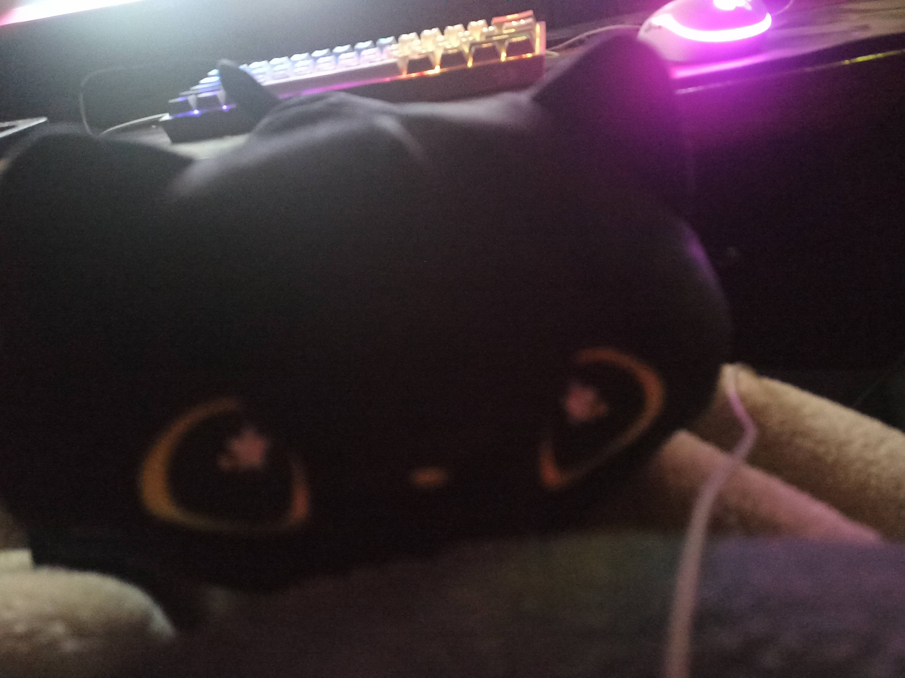
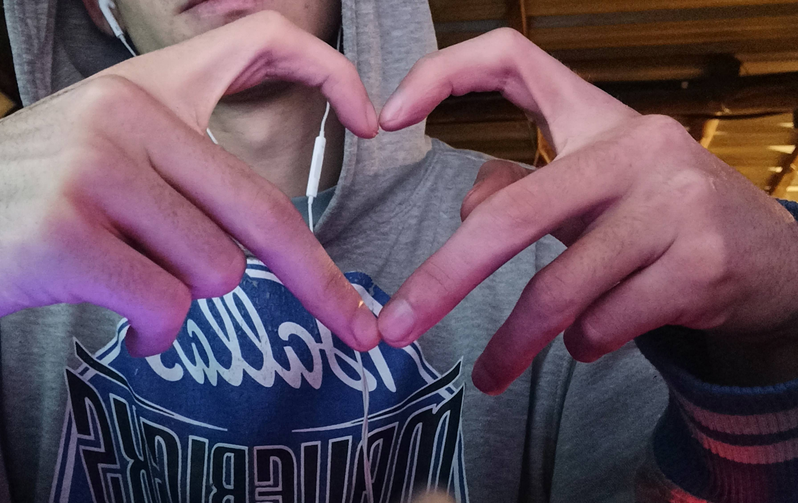
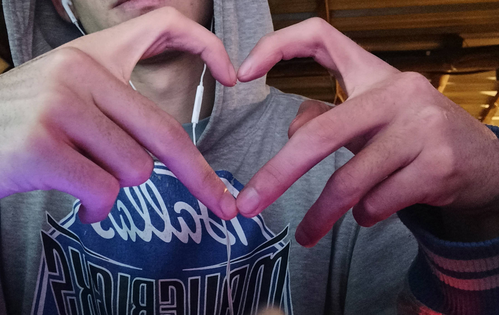
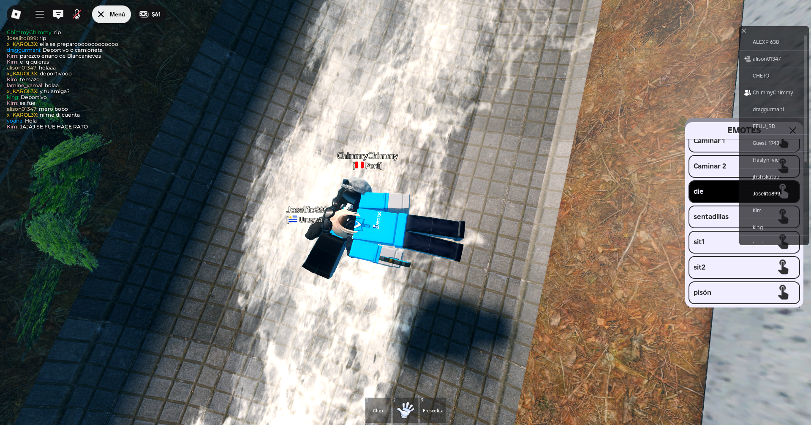
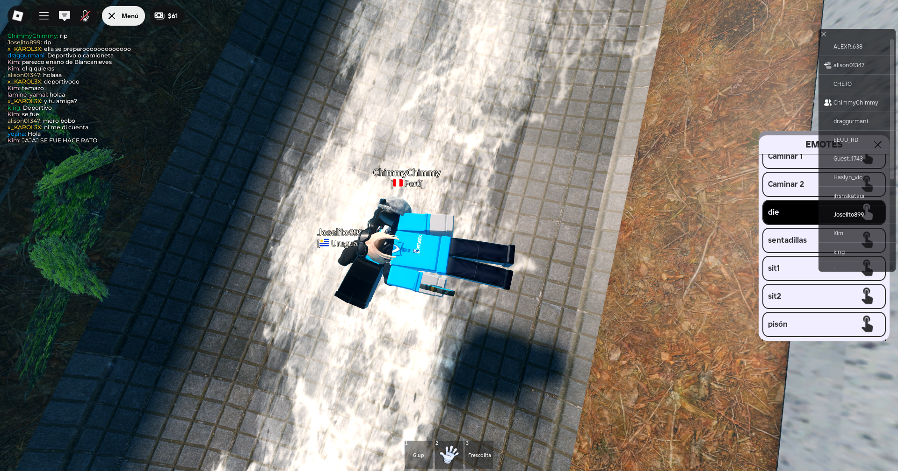

Amor, me levante a escribir esto por que no puedo dormir
no puedo dejar de pensar, y pensar.
Princesa, nose, nose si quieras leer todo esto, no tienes
que hacerlo, pero quiero que sepas que lo escribi con
todo mi amor...
Y se que esto no solucionara nada, solo necesito
intentar darte una idea de lo que te amo, de lo que
siento por vos
Recuerdo la primera vez que hablamos por llamada,
solo te molestaba, pero con los dias empezamos a hablar
mas por el server, y de apoco te fui conociendo.
Luego comenzamos a hablar por privado y llegaron esas llamadas
que duraban toda la noche, podiamos hablar por horas y horas,
y el tiempo pasaba volando, contigo, me sentia completado
y un dia, paso lo inevitable, te empece a ver distinto
me enamore, y estaba confundido, tenia miedo de arruinar
nuestra amistad, iba a esperar unos cuantos meses
para intentar animarme a decirte algo, pero
vos cambiaste totalmente mis planes, para bien,
cuando lei tu mensaje esa noche de febrero,
no sabia como sentirme, estaba muy feliz, pero a la vez
tenia miedo, cuando te pregunte si querias intentarlo conmigo,
tire mi celular, y me aleje, me daba miedo tu respuesta,
y cuando la lei, me senti el chico mas feliz del mundo,
esa noche dormi muy feliz... Fue el mejor dia de mi vida
Desde entonces, me siento tan bien, siento que estoy donde debo estar,
con quien debo estar, siento que nos complementamos,
sos perfecta para mi, puedo ser yo mismo, puedo hablarte de mis cosas
y se que me escucharas, asi como yo a vos.
Muchas veces, me siento cansado,
estresado, triste, pero todo eso se esfuma, se va, al momento de escuchar tu voz.
Me encanta escucharte,
que me cuentes tus cosas, podria estar horas solo oyendote,
y seria el chico mas feliz del mundo...
Te amo Raffaella, Amo cada cosa que te hace ser vos.
Amo las cosas malas que crees tener, amo las cosas buenas
que no sabes que tenes, amo tu personalidad, tu humor, tu sonrisa,
tu carisma, tu forma de ser, como te expresas, lo fuerte que intentas ser siempre.
Amo que siempre tengas un chisme para contar, amo tu energia, amo lo divertido
que es estar contigo, amo incluso como me insultas, se que suena
super masoquista
Tambien te amo por tu voz, por tu carita preciosa, por tu pelo rizado,
tus ojitos, tu boca, tu nariz, tu piel, tus cejas, tu cinturaza,
por tus cachetitos, por tus manitas chiquitas, por
tu acento al hablar ingles, por tu acento, que no me muestras
pero que he escuchado, y me fascina.
por enamorarme sin tocar mi piel, por enamorarme de la forma
mas pura que existe, por enamorarme de tu alma,
por enamorarme de vos...
te amo por todo eso y por muchisimo mas.
Perdon por hacerte leer tanto, y tan temprano...
pero, puedes ver una cosa mas?
Fotos de la mejor cita de mi vida
.png)
.png)
.png)
.png)
Cuando me llego chimuela
Nuestro primer match
.png)
Nuestra primer boda (quiero q nos casemos otra vez)
.png)
.png) 

.png)
"Casitas de odio (amor)"
.png)
Nuestra primer casita
.png)
.png)
.png) 

.png)
.png)
.png)
Sos el amor de mi vida
quiero seguir reuniendo recuerdos
junto a vos, por siempre...
Te amo 💘